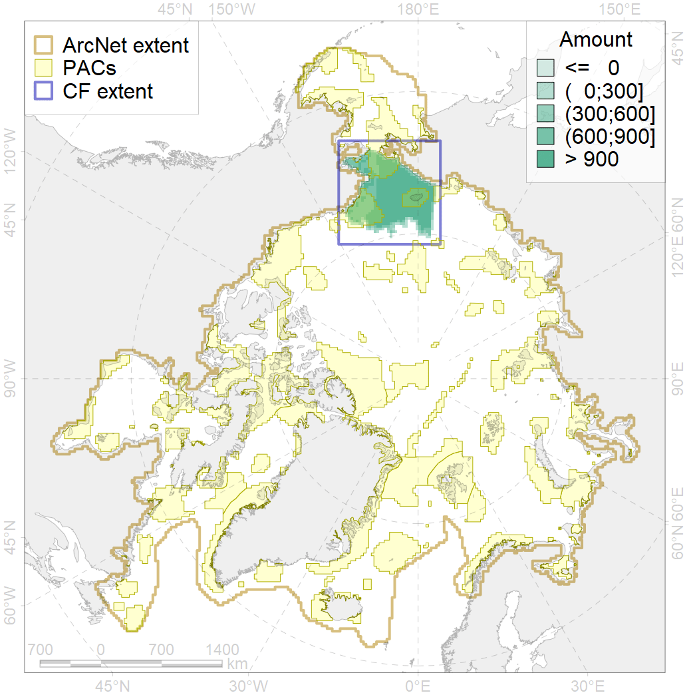
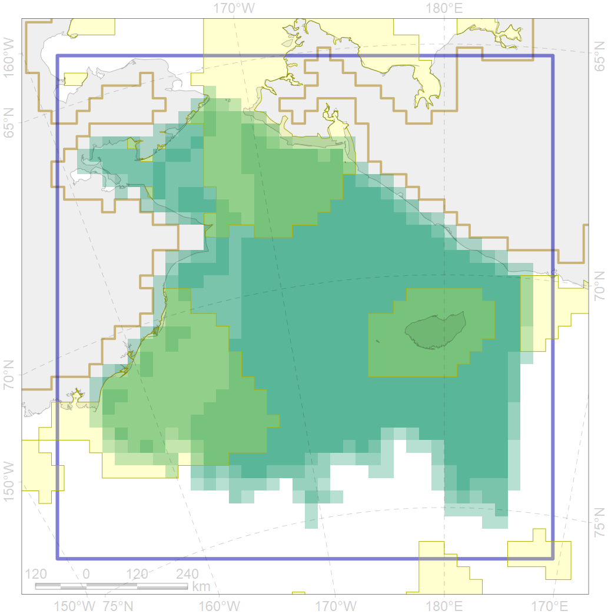

2008

| CF ID | 2008 |
| CF Name | Bearded seal whelping areas in the Chukchi Sea |
| Time Period | Varies by dataset |
| Source(s) | NOAA, 2002; NOAA, 1988; surrogate data; bathymetry from http://www.naturalearthdata.com/downloads/10m-physical-vectors/; Bengston et al 2005 |
| Seasonality | March-June |
| Depth Horizon | 0-200 m |
| Methodology | Data compilation, expert input |
| Author Name | Irina Trukhanova |
| Notes | |
| Conservation Target Set in the Scenario | 0.24 |
| Conservation Target Achieved in the Scenario | 0.361 (Scenario: 150.3%) |
| PAC ID | Proportion in the PAC | Contribution to ArcNet Target Achievement | PAC’s Contribution to the Achieved Target |
|---|---|---|---|
| 5 | 12.3% | 45.8% | 30.5% |
| 6 | 0.2% | 0.8% | 0.5% |
| 7 | 8.3% | 34.0% | 22.6% |
| 8 | 0.3% | 1.0% | 0.7% |
| 60 | 16.5% | 62.6% | 41.7% |
| inner | 37.7% | 144.2% | 96.0% |
| outer | 62.3% | 6.1% | 4.0% |